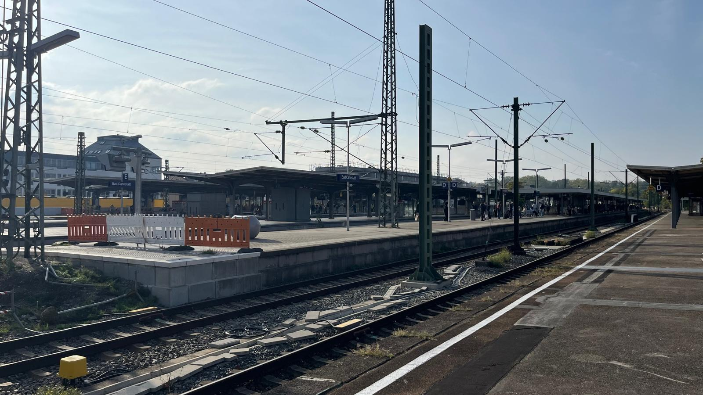
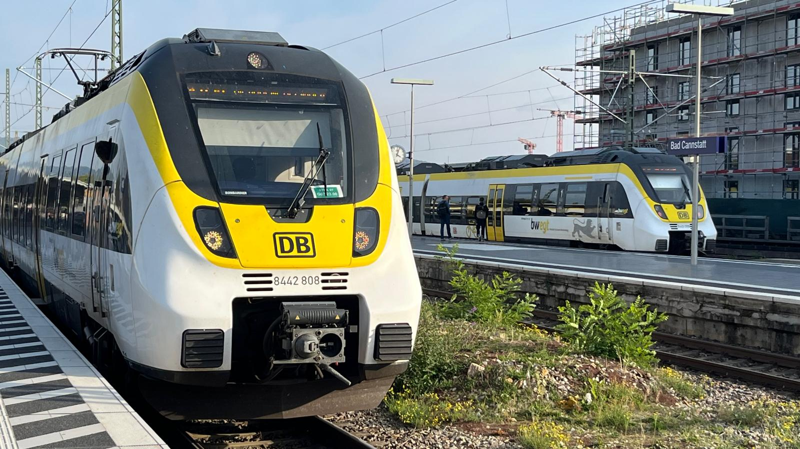
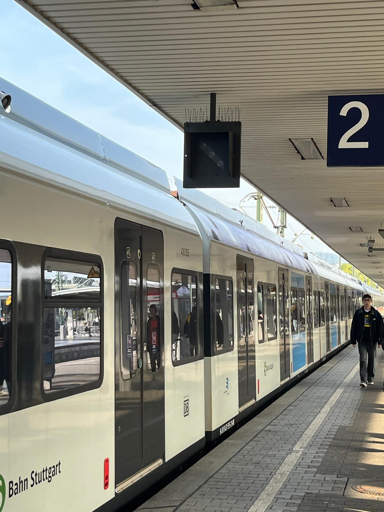
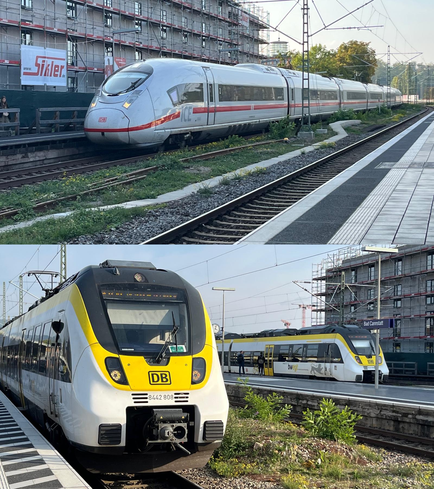
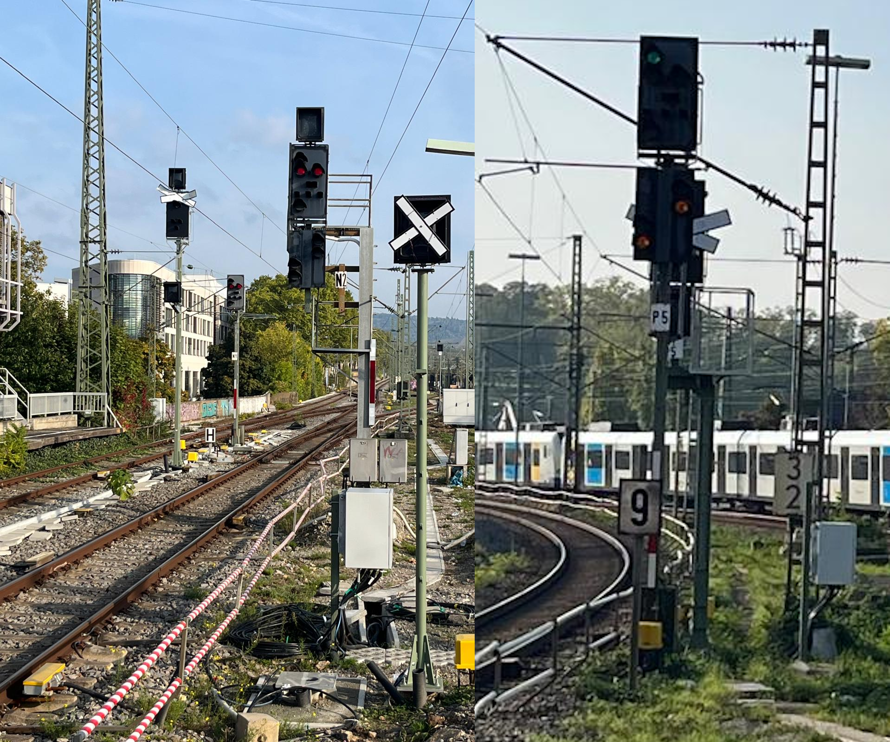
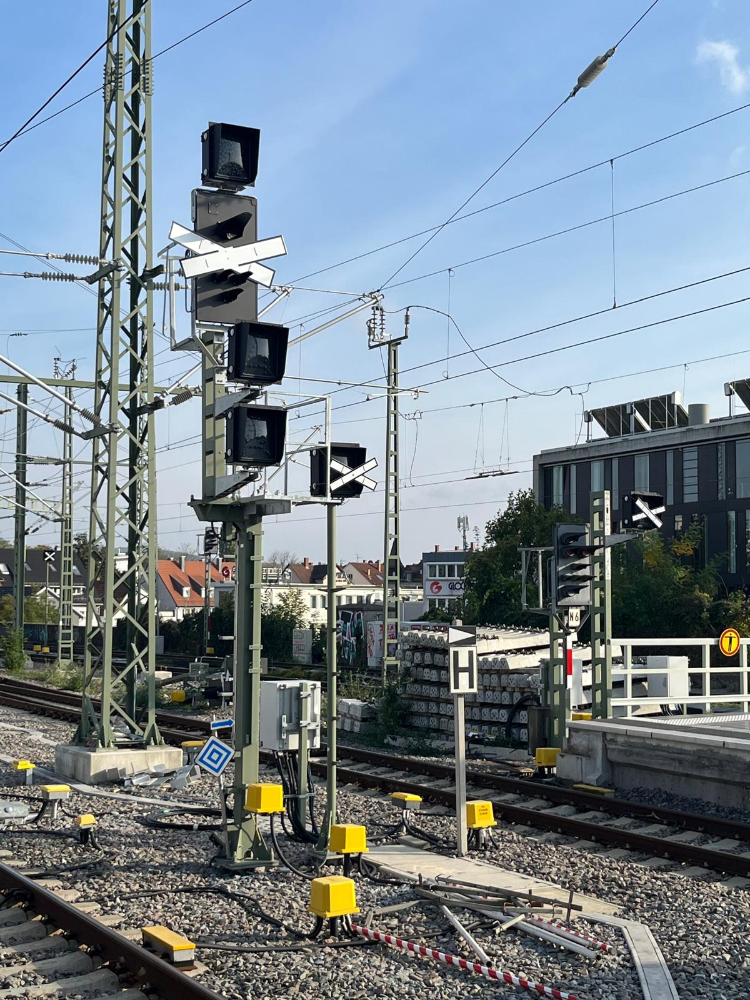
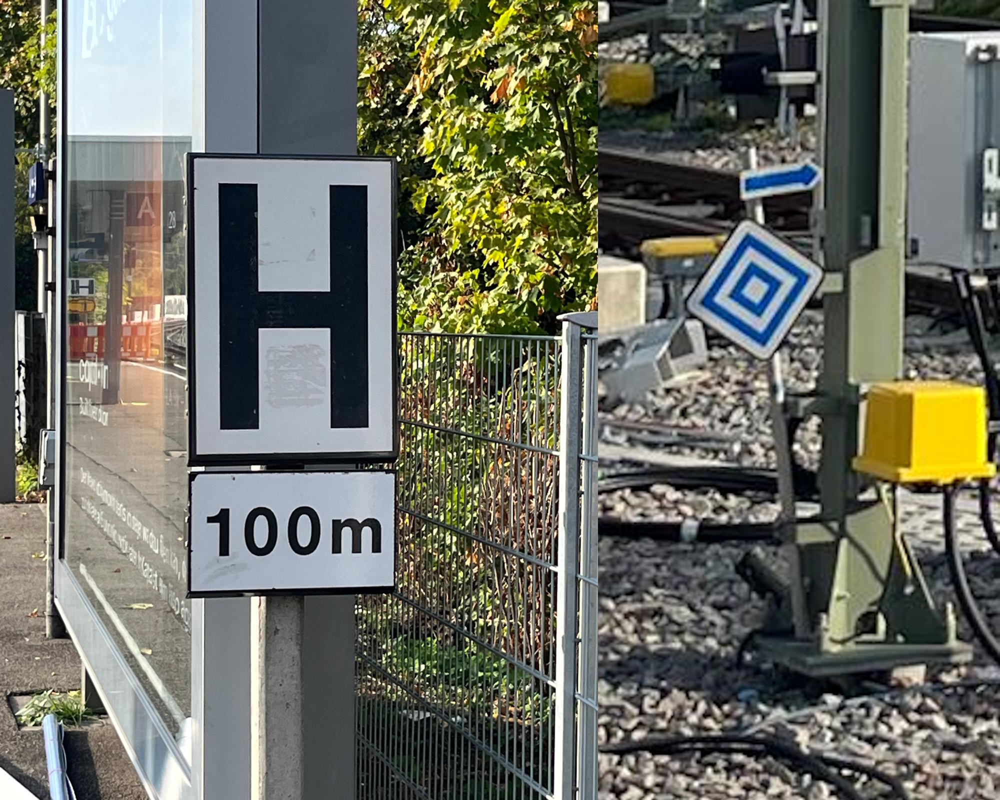
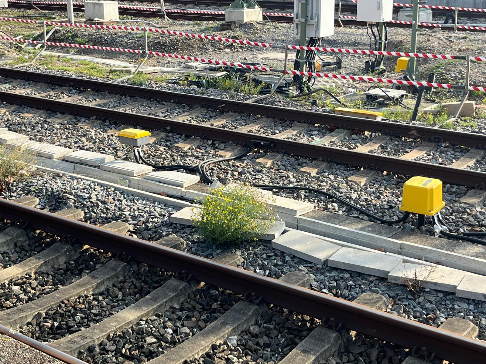
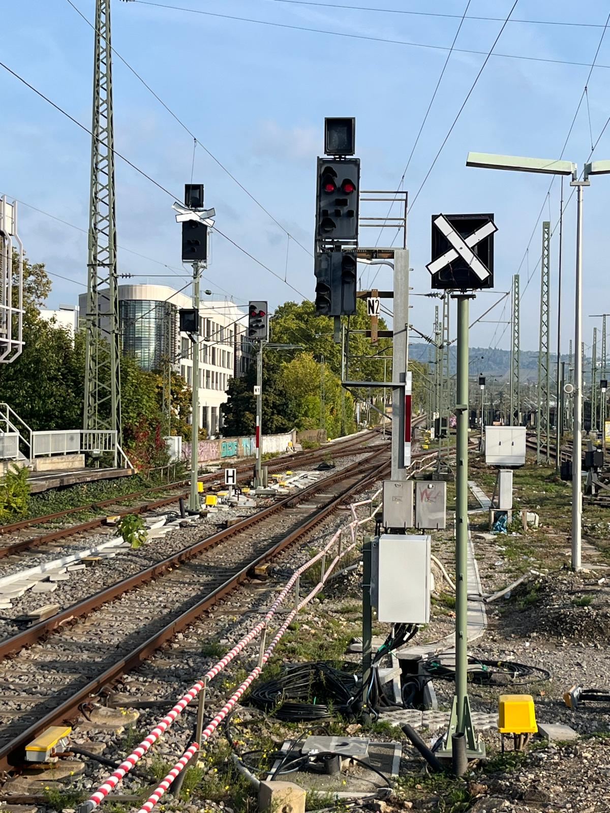

BAD
CANN
STATT
Wo Züge rollen.
Signale entscheiden. Technik arbeitet.

VIER ZUGWELTEN.
EIN BAHNHOF.
Vom dichten S-Bahn-Takt bis zum schnellen Fernverkehr.
Bad Cannstatt ist Durchgangsstation, Umsteigepunkt und Teil eines stark befahrenen Eisenbahnkorridors.

DER TAKT
DER STADT.
S-Bahn Stuttgart
Viele Fahrten, kurze Haltezeiten und ein eng abgestimmter Betriebsablauf. Hier zählt jede freie Fahrstraße.

SCHNELLER.
WEITER.
ICE · IRE · RE
Fern- und Regionalzüge verbinden Stuttgart mit der Region und darüber hinaus. Nicht jeder Zug hält – manche passieren den Bahnhof ohne planmäßigen Halt.

LICHTER,
DIE LENKEN.
H/V-Signale: Fahrt, Halt und Ankündigung.
Hauptsignale sichern Zugfahrten. Vorsignale kündigen an, welcher Signalbegriff am nächsten Hauptsignal zu erwarten ist. Entscheidend ist immer das gültige Signalbild.

NICHT JEDES
SIGNAL GILT.
Ausgekreuzt. Abgedeckt. Außer Betrieb.
Ein ausgekreuztes oder abgedecktes Signal kann auf eine vorübergehende oder dauerhafte Außerbetriebnahme hinweisen. Welche Bedeutung gilt, ergibt sich aus den betrieblichen Regeln und der konkreten Kennzeichnung – nicht allein aus dem Aussehen.

KLEINE TAFELN.
KLARE AUFGABE.
Ne 5 · Fahrtanzeiger · El 6
Ne 5: Haltetafel für Zugpersonal.
Fahrtanzeiger: zeigt die zugbezogene Abfahrbereitschaft beziehungsweise Abfahrtinformation gemäß örtlicher Ausrüstung.
El 6: Halt für elektrisch angetriebene Triebfahrzeuge vor einer anschließenden Schutzstrecke beziehungsweise einem nicht elektrisch befahrbaren Fahrweg, entsprechend der konkreten Ausführung.

UNSICHTBAR.
ENTSCHEIDEND.
Stellwerk und technische Einrichtungen
Stellwerkstechnik stellt Fahrstraßen ein, steuert Weichen und Signale und überwacht deren sichere Lage. Kabel, Antriebe, Schaltschränke und Signaltechnik bilden die technische Grundlage des Bahnbetriebs.

BAUEN.
UMSCHALTEN.
Baustellen verändern den Betrieb.
Erneuerungen an Gleisen, Weichen, Signalen und Kabelanlagen können Ersatzsignale, abgedeckte Signale, geänderte Fahrwege und zeitweise Einschränkungen mit sich bringen.

MEHR ALS
NUR GLEISE.
Züge sind sichtbar. Die sichere Fahrt dahinter ist Präzisionsarbeit.
Zugverkehr · Signaltechnik · Stellwerk · Baustellen